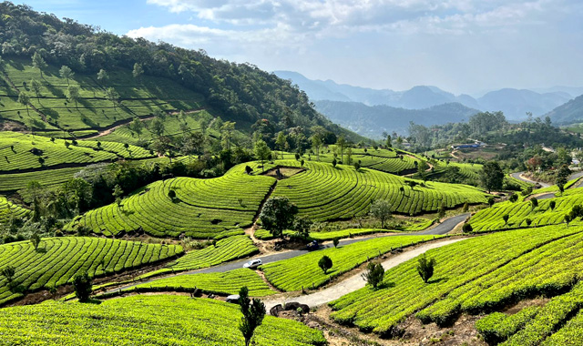
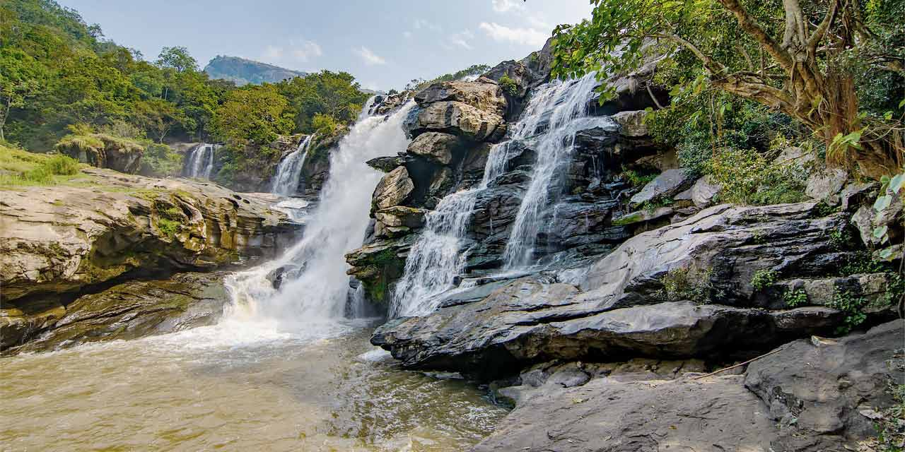
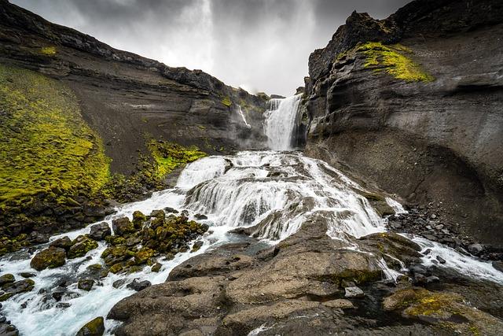
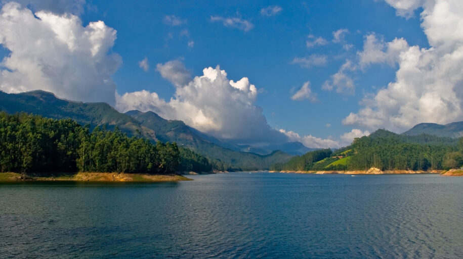
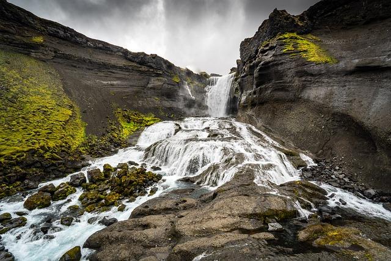
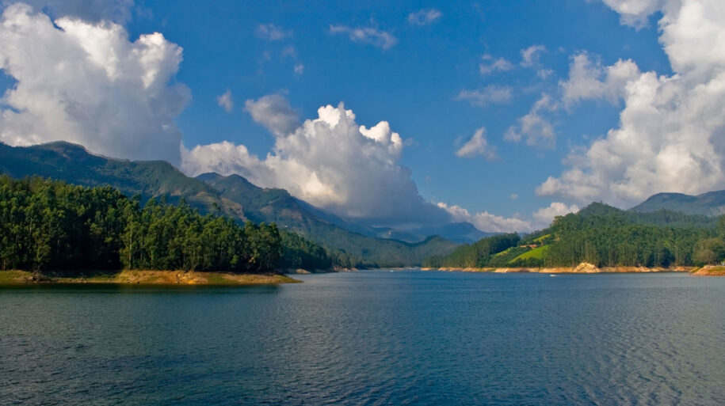

Things to Do in Munnar

Visit Tea Plantations
Explore sprawling tea estates and taste fresh tea at the Tata Tea Museum.

Eravikulam National Park
Home to the endangered Nilgiri Tahr and the beautiful Neelakurinji flowers.

Visit Waterfalls
Enjoy the scenic beauty of Attukal, Lakkam, and Nyayamakad waterfalls.
 


